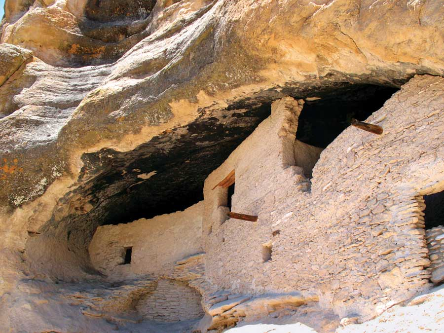
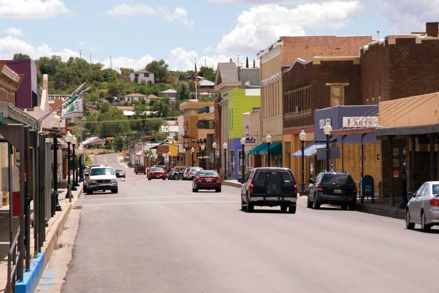

In order to thrive, most towns need just two things: creative residents with good ideas and a responsive local government that clears barriers and offers support for those ideas to bear fruit. Silver City, a town of about 10,500 near the western border of New Mexico, possesses both qualities in abundance.
Home to some 30 art galleries as well as the college-sized Western New Mexico University, Silver City has long been a destination for artists and boasted a thriving arts scene. Most towns would be content to leave it at that, but Silver City has drafted a cultural plan, the primary goal of which is to “support artists, cultural/arts groups, and cultural entrepreneurs” through various efforts.
Equally impressive is the city’s commitment to reducing emissions of greenhouse gases. Other towns have paid lip service to the concept, but in Silver City, a plan that includes data on current energy patterns and pollution is available on the town website. It outlines steps toward meeting the principles of the Kyoto agreement.
The town sits on the southern tip of the Gila National Forest, which includes 3 million spectacular acres of protected wilderness areas, some of the nation’s first, as well as famed hot springs. The town also boasts more diversity than many others of its size, with a small Native American population and more than half its residents describing themselves as Hispanic or Latino.
Population: 10,545
Median Household Income: $25,881
Weather: A gentle high-desert climate featuring dry springs, hot summers and cool winters with just a dusting of snow.
What Makes It Great: A small art town with a great climate and a progressive city government. Active efforts to curb greenhouse gas emissions.
|
 BOB CLEMENZ PHOTOGRAPHY The Gila cliff dwellings are part of the 3 million acres of the Gila National Forest. Silver City, N.M., sits at the southern tip of this protected wilderness area. |
 HOUSERSTOCK Silver City’s residents have worked to preserve the town’s unique attributes. |
|